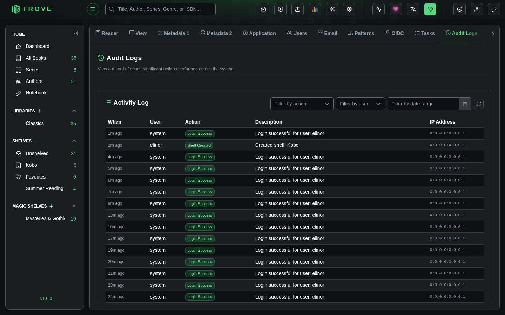

Audit Logs
Audit Logs provide a record of admin-significant actions performed across the system. Every login attempt, library change, user management action, and configuration update is logged with a timestamp, the user who performed it, and the originating IP address.
Audit Logs are available to admin users only and can be found under Settings > Audit Logs.
Activity Log
The Activity Log displays all recorded events in reverse chronological order (newest first).

Table Columns
| Column | Description |
|---|---|
| When | Relative timestamp (e.g., "Just now", "5m ago", "2h ago", "3d ago"). Hover for the full date and time. |
| User | The user who performed the action. Shows system for automated or internal events like login processing. |
| Action | A color-coded badge indicating the type of action (see action types below). |
| Description | A human-readable summary of what happened. Click to expand long descriptions. |
| IP Address | The IP address of the request, along with a country flag resolved via geolocation. |
Action Types
Actions are grouped into categories and displayed with color-coded badges.
Green (Created / Success)
| Action | Description |
|---|---|
| Login Success | A user successfully logged in |
| User Created | A new user account was created |
| Library Created | A new library was added |
| Book Uploaded | A book file was uploaded via Bookdrop |
| Book Sent | A book was sent to a device or email |
| Shelf Created | A new shelf was created |
| Magic Shelf Created | A new magic shelf was created |
| Email Provider Created | A new email provider was configured |
| OPDS User Created | A new OPDS user was added |
Blue (Updated / Executed)
| Action | Description |
|---|---|
| User Updated | A user profile was modified |
| Password Changed | A user's password was changed |
| Library Updated | Library settings were modified |
| Library Scanned | A library scan was triggered |
| Metadata Updated | Book metadata was edited |
| Settings Updated | Application settings were changed |
| Task Executed | A background task was started (e.g., metadata refresh) |
| Shelf Updated | A shelf was modified |
| Magic Shelf Updated | A magic shelf was modified |
| Email Provider Updated | An email provider configuration was changed |
| OPDS User Updated | An OPDS user was modified |
| Naming Pattern Changed | A library's file naming pattern was updated |
| Duplicate Books Merged | Duplicate books were merged together |
Orange (Security / Permissions)
| Action | Description |
|---|---|
| Permissions Changed | A user's permissions were modified |
| OIDC Config Changed | OpenID Connect (SSO) configuration was updated |
Red (Failed / Deleted)
| Action | Description |
|---|---|
| Login Failed | A login attempt was unsuccessful |
| User Deleted | A user account was removed |
| Library Deleted | A library was deleted |
| Book Deleted | A book was removed from a library |
| Shelf Deleted | A shelf was removed |
| Magic Shelf Deleted | A magic shelf was removed |
| Email Provider Deleted | An email provider was removed |
| OPDS User Deleted | An OPDS user was removed |
Filtering
Three filters are available in the toolbar to narrow down the log.
Filter by Action
Select a specific action type from the dropdown to show only matching entries (e.g., only "Login Failed" events).
Filter by User
Select a username from the dropdown to see only actions performed by that user. The list is populated from all usernames that appear in the logs.
Filter by Date Range
Pick a start and end date to view logs from a specific time period.
Auto-Refresh
Click the refresh icon in the toolbar to enable auto-refresh. When active, the log automatically reloads every 10 seconds, making it useful for monitoring live activity. The icon spins while auto-refresh is enabled. Click it again to disable.
IP Geolocation
Each log entry includes the originating IP address along with a country flag. The country is resolved automatically using IP geolocation. Private or local IP addresses (127.x.x.x, 192.168.x.x, etc.) do not display a country flag.
Notes
- Audit Logs are only accessible to admin users.
- Logs are stored indefinitely with no automatic cleanup.
- Descriptions longer than 1024 characters are truncated.
- The log table supports pagination with page sizes of 10, 25, or 50 entries.
- Automated system actions (like login processing) are logged with the username system.
- Audit logging is designed to be non-blocking. If logging fails for any reason, it does not affect the operation that triggered it.